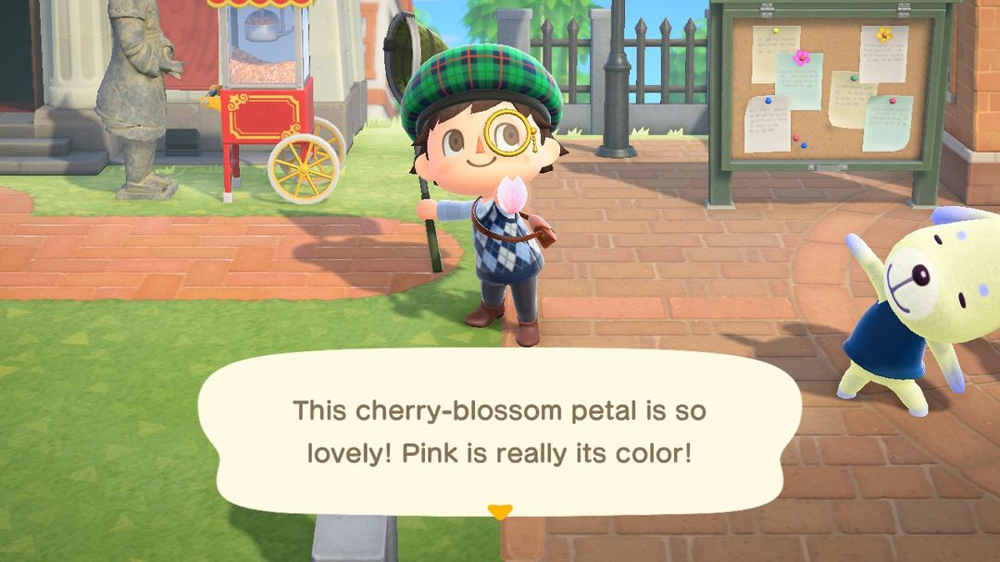
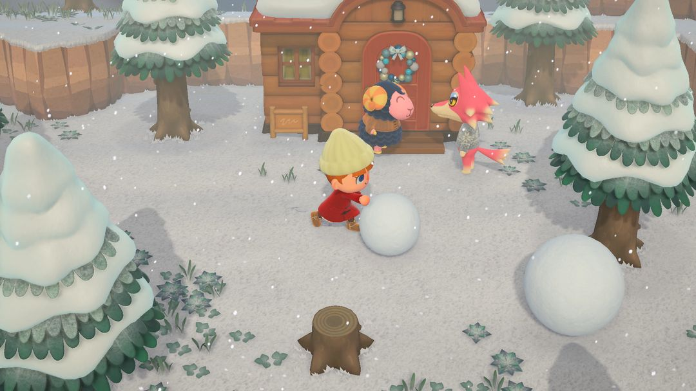
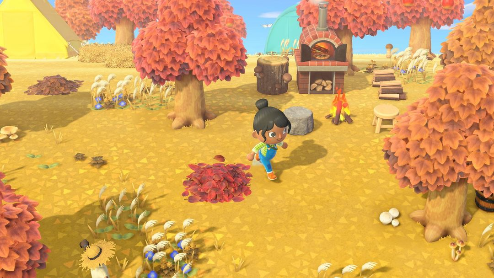

季节限定 DIY 材料一年表
樱花、春笋、贝壳、树果、蘑菇、枫叶、雪花、装饰品：什么时候捡，拿去做什么
岛上有一批 DIY 材料只在一年里固定的几段日子冒出来：樱花花瓣、枫叶一年只飘 10 天，雪花、装饰品也只赶在冬天那一阵。日子一过，树上、海滩上、半空中就再也找不到，想做对应的家具只能等来年。
北半球一年里最忙的是秋冬：9 月起摇树能摇下橡栗和松果，11 月整月树旁长蘑菇，11 月 16～25 日中间还夹着枫叶，12 月 11 日起又开始飘雪花。所以先把下面这张一年表过一遍，记下哪几天要上线去捡；DIY手册大多靠打气球攒，冰雪系列得靠堆雪哥哥，实在错过了，2.0 以后还能坐航平的船去补。
01一年表：什么时候捡、怎么捡
表里的日期都按游戏里的时间算。南半球的季节和北半球正好差半年，所以大部分材料的月份往后挪了 6 个月；只有装饰品是跟着年底走的，两个半球都是 12 月 15 日到第二年 1 月 6 日。
| 材料 | 北半球 | 南半球 | 怎么拿 |
| 春笋 | 2/25～5/31 | 8/25～11/30 | 斧头砍竹子 |
| 樱花花瓣 | 4/1～4/10 | 10/1～10/10 | 捕虫网抓空中的花瓣 |
| 夏天贝壳 | 6/1～8/31 | 12/1～2 月底 | 海滩上捡 |
| 橡栗、松果 | 9/1～12/10 | 3/1～6/10 | 摇树，松果只在针叶树上 |
| 蘑菇 | 11 月整月 | 5 月整月 | 树旁捡，珍贵蘑菇要挖 |
| 枫叶 | 11/16～11/25 | 5/16～5/25 | 捕虫网抓空中的枫叶 |
| 雪花 | 12/11～2/24 | 6/11～8/24 | 捕虫网抓 |
| 大雪花 | 同雪花 | 同雪花 | 完美的雪哥哥给 |
| 装饰品（红、蓝、金） | 12/15～1/6 | 12/15～1/6 | 摇针叶树 |
捡法都不难：春笋是拿斧头砍竹子砍出来的，夏天贝壳在海滩上弯腰就能捡，橡栗和松果靠摇树往下掉，松果只挂在针叶树上；樱花花瓣、枫叶和雪花都在半空中飘，得挥捕虫网去兜；装饰品也是摇针叶树摇下来的。
樱花和枫叶都只有 10 天，最容易错过。雪花能捡两个多月，这两样碰上那几天没怎么上线，一整年就过去了。
秋冬最挤
北半球从 9 月起就能摇橡栗、松果，一直摇到 12 月 10 日；11 月整月树旁长蘑菇，11 月 16～25 日枫叶又插进来；12 月 11 日起开始飘雪花，12 月 15 日到第二年 1 月 6 日针叶树上还挂着装饰品。几样材料前后脚接上，这几个月最好隔三岔五在岛上转一圈。春笋和樱花则要等到来年春天。
南半球的月份整体往后挪半年：樱花在 10 月 1～10 日，春笋一直砍到 11 月 30 日，12 月 1 日起海滩上开始出夏天贝壳。装饰品和北半球一样，也是 12 月 15 日起。

樱花花瓣要用捕虫网在空中抓（英文版画面）（图：Nookipedia）
02DIY手册从哪来
光有材料还不够，得先学会对应的DIY手册才做得出东西。来路主要有三个。
最主要的是打气球。季节里天上飘过的气球，打下来会掉当季的DIY手册，一直掉到你把当季的学全为止。材料季里看见气球飘过，最好追上去打下来。
其次是季节第一天去服务处。狸克或西施惠会送你一份当季的DIY手册，比如春笋季的「流水素面」、樱花季的「赏花组合」、蘑菇季的「蘑菇花环」。这份是季节第一天才送的，那天上线先进服务处转一圈。
第三个是航平的游船：有些季节岛上的瓶中信里也装着当季的DIY手册，第 5 节细说。
| 材料 | DIY手册数 | 做得出来的 |
| 春笋 | 12 | 流水素面、竹笋灯、蒸笼 |
| 樱花花瓣 | 15 | 赏花组合、樱花盆栽、樱花雨伞 |
| 夏天贝壳 | 9 | 贝壳花环、南方海洋墙、水面地板 |
| 橡栗、松果 | 10 | 树果灯、小树果树、橡栗地毯 |
| 蘑菇 | 12 | 蘑菇灯、蘑菇阳伞、蘑菇屏风 |
| 枫叶 | 10 | 枫叶雨伞、石水盆～枫叶～、大树果树 |
| 雪花 | 26 | 冰块床铺、冰块艺术品、3层雪人 |
| 装饰品 | 18 | 大型圣诞树、装饰台灯、特大装饰品 |
雪花这一行的 26 份里，有 16 份（冰块床铺这类冰雪系列）只有雪哥哥给，气球不会掉。想学全冰雪系列，就得在下雪的日子里一个接一个地堆雪哥哥。
小提示这些材料都能放进收纳。季节快结束时多捡一些收起来，过了季也能接着做；当季的DIY手册没学全也不要紧，等以后学到了再拿出来用。
03堆一个完美的雪哥哥
雪球只在北半球 12 月 11 日～2 月 24 日、南半球 6 月 11 日～8 月 24 日出现，正好和雪花同一段日子。岛门开着的时候雪球不会出来，想堆雪哥哥就挑岛门关着的时候。
找到两个雪球，推着在地上滚，雪球会越滚越大，再把一个推到另一个上面，就堆成了雪哥哥。两个都要滚到很大，头比身子稍小一点，才算完美。推的时候别急着把两个拼到一起，先各自滚够个头。
完美的雪哥哥会送你一个大雪花和一份冰雪系列的DIY手册。冰雪系列那 16 份只能这样拿，所以下雪的季节里值得多堆几次。
第一次堆的那个比较宽容，不管堆成什么样都会给。雪哥哥能在岛上撑 4 天，之后 3 天每天过去跟他聊几句，他还会再给一个大雪花。等冰雪系列的DIY手册学全了，完美的雪哥哥就只给大雪花了。

雪球推着走会越滚越大（图：Nookipedia）
04蘑菇怎么捡
蘑菇季里，每天树旁都会冒出圆形、瘦小、扁平、出色四种蘑菇，沿着岛上的树挨个看一圈就能捡齐。
珍贵蘑菇藏得深一些，它埋在树旁的土里，要拿铲子挖出来。一个珍贵蘑菇能卖 16,000 铃钱，是这些季节材料里最值钱的，做家具用不完的话卖掉也不亏。
蘑菇还能直接吃，吃下去浑身是劲，能把整棵树挖起来挪到别处。

秋天的岛，树下能看到蘑菇（图：Nookipedia）
05错过了：坐航平的船去补
2.0 起，码头的航平每天能载你出海一次，收 1,000 Nook里数。偶尔会开到停在某个季节的岛上：樱花、竹子、夏天贝壳、蘑菇、枫叶、冬天各有一种，每种的几率大约 3%。到了那座岛，能捡到那个季节的材料，海边的瓶中信里也可能装着当季的DIY手册。
几率不高，只能算碰运气。还有一个前提：你自己的岛上得先过过那个季节，才可能被带到对应的岛。
3.0 把旅馆第一间 VIP 客房布置好以后，航平每天还能多跑一趟，这一趟收 100 旅馆券。一天出海两次，撞上季节岛的机会也多一点。
动森圈圈 · 小程序和 iOS App 都搜「动森圈圈」